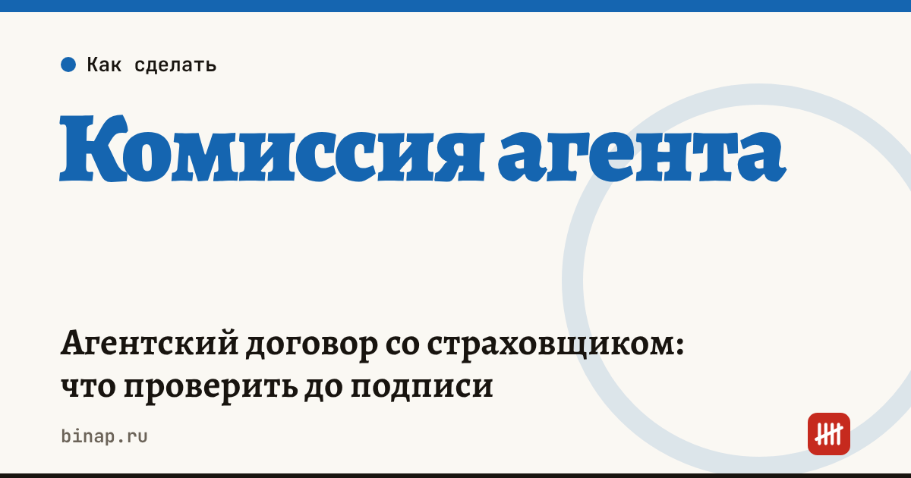

Агентский договор со страховщиком: что проверить до подписи

Доход страхового агента почти целиком зависит от агентского договора со страховой компанией. Какой процент, когда его платят, что будет при досрочном расторжении полиса клиентом — всё это определяет договор, а не реклама страховщика. Проверьте ключевые пункты до подписи: изменить их потом сложнее.
Коротко
- Страховой агент действует от имени и по поручению страховщика на основании гражданско-правового договора (ст. 8 закона «Об организации страхового дела в РФ»).
- Главные пункты: размер вознаграждения по видам страхования, срок выплаты, возврат вознаграждения при досрочном расторжении полиса.
- Деньги клиентов — не ваш доход: важно, как и в какой срок вы перечисляете премии страховщику.
- Работать с несколькими страховыми можно, если это не запрещено договорами, — проверьте условия.
Сроки, изменения и разборы для ИП и самозанятых — каждое утро в Telegram и MAX. Подпишитесь, чтобы не пропустить.
Чек-лист пунктов договора
| Пункт | Что проверить |
|---|---|
| Предмет и полномочия | какие виды страхования вы продаёте, можете ли подписывать полисы и принимать оплату |
| Вознаграждение | процент или сумма по каждому виду страхования, от какой суммы считается |
| Срок выплаты | после оплаты премии клиентом, после отчёта агента или раз в месяц |
| Возврат вознаграждения | что если клиент расторг полис досрочно: удерживают ли комиссию и за какой период |
| Деньги клиентов | можно ли принимать премию, на какой счёт, в какой срок перечислить страховщику |
| Бланки строгой отчётности | кто отвечает за бланки полисов и что будет при утере |
| Отчёт агента | форма, срок, как подтверждается вознаграждение |
| Эксклюзивность | запрещено ли работать с другими страховыми |
| Персональные данные клиентов | кто оператор данных, что вам разрешено хранить и как |
| Расторжение | порядок, срок уведомления, выплата вознаграждения за уже проданные полисы |
Как сравнить договоры двух страховщиков
Сравнивайте не процент, а то, сколько денег вы получите за год по своему портфелю. Расчёт редакции, условные цифры:
| Страховщик А | Страховщик Б | |
|---|---|---|
| Продано премий за год | 2 000 000 ₽ | 2 000 000 ₽ |
| Вознаграждение | 20% | 17% |
| Доля досрочно расторгнутых полисов | 10% | 10% |
| Возврат комиссии при расторжении | полностью | не возвращается |
| Итого вознаграждение | 400 000 − 40 000 = 360 000 ₽ | 340 000 ₽ |
Разница меньше, чем кажется по ставке. Если доля расторжений выше, договор Б может оказаться выгоднее.
Налоги и учёт
Вознаграждение агента — ваш доход как ИП. Премии клиентов, которые вы перечисляете страховщику, доходом не являются, если вы действуете по агентскому договору. Храните отчёты агента: это подтверждение суммы вознаграждения.
Вести учёт вознаграждения и налогов ИП можно в онлайн-бухгалтерии: ссылка
Как открыть ИП — пошагово онлайн. Какой объект УСН выбрать — УСН 6% или 15%. Сколько платит ИП без сотрудников — расчёт на 2026 год. Все шаги — в разделе «Страховым агентам».
Частые вопросы
Может ли страховой агент работать без ИП? Физлицо может быть агентом по гражданско-правовому договору, тогда страховщик удерживает НДФЛ и платит взносы. Подходит ли вам этот вариант, ИП или самозанятость, — уточните у страховщика и проверьте условия налоговых режимов.
Что если клиент расторг полис через полгода? Смотрите пункт о возврате вознаграждения. Часто страховщик удерживает часть комиссии из следующих выплат.
Можно ли хранить базу клиентов у себя? Только в пределах, разрешённых договором и законом о персональных данных. Чаще оператором данных является страховщик, а агент обрабатывает их по его поручению.